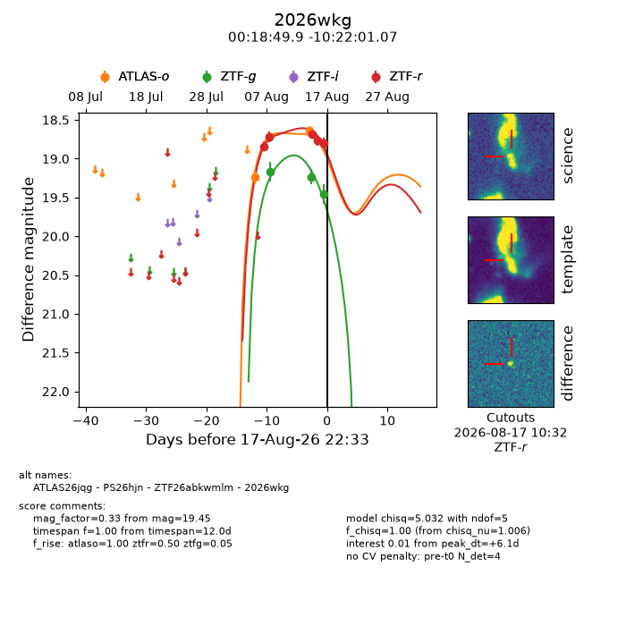
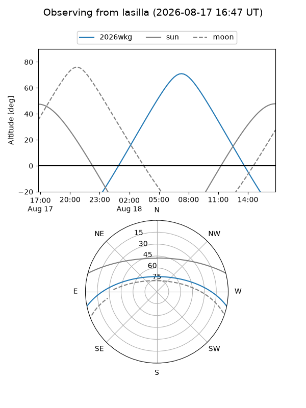
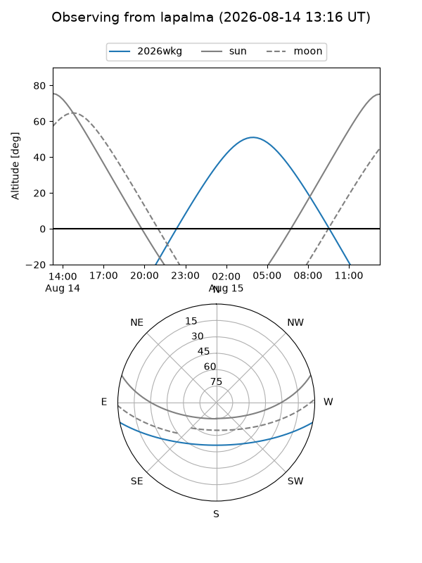
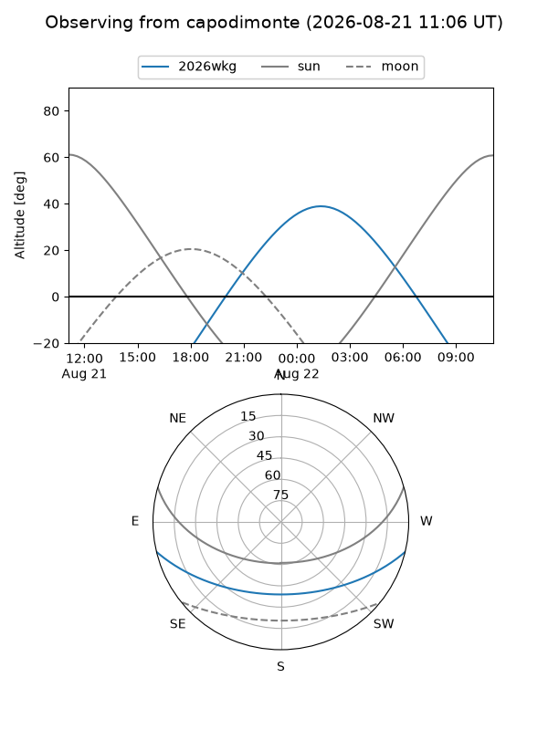
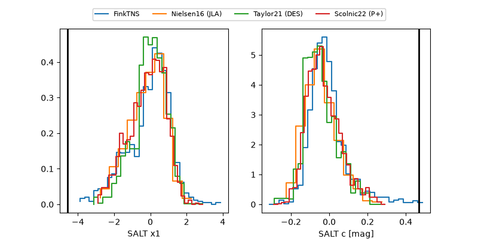

2026wkg
Target 2026wkg at 2026-08-17 22:37
Aliases and brokers:
FINK-ZTF: ztf.fink-portal.org/ZTF26abkwmlm
Lasair-ZTF: lasair-ztf.lsst.ac.uk/objects/ZTF26abkwmlm
ALeRCE-ZTF: alerce.online/object/ZTF26abkwmlm
YSE-PZ: ziggy.ucolick.org/yse/transient_detail/2026wkg
TNS name: wis-tns.org/object/2026wkg
Direct TNS query: direct search
alt names
ZTF26abkwmlm (ztf,fink_ztf)
2026wkg (tns,yse)
ATLAS26jqg (atlas)
PS26hjn (panstarrs)
Coordinates:
equatorial (ra, dec) = 4.7079,-10.36696
equatorial (HMS+DMS) = 00:18:49.91,-10:22:01.07
galactic (l, b) = (96.7638,-71.56253)
Flags:
TNS type: nan
peak dt: +6.1
Photometry:
last atlaso=18.63, ztfg=19.45, ztfr=18.80
2 atlaso, 3 ztfg, 5 ztfr detections
Lightcurve

Visibility



Additional plots
